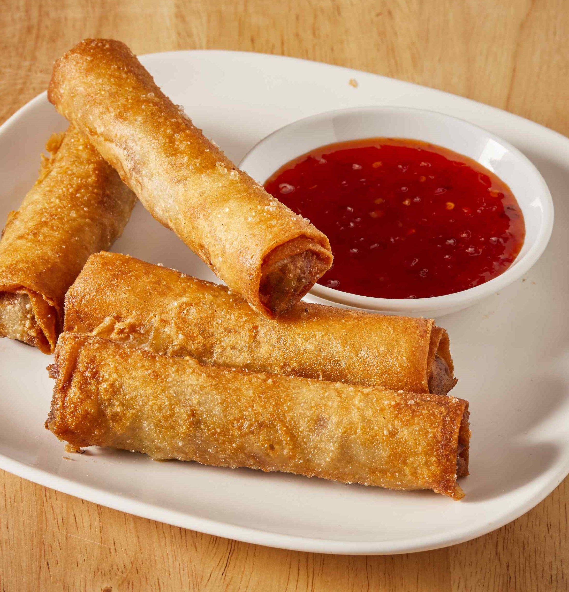

Filipino Lumpia

Description
This is one of the best Filipino foods next to pancit. You can find lumpia wrappers in Asian food stores wherever they keep their frozen food, and also (if you're lucky) in very large supermarkets.
Use this recipe for 6 servings
Ingredients
- 1 (12 ounce) package lumpia wrappers
- 1 pound ground beef
- ½ pound ground pork
- ⅓ cup finely chopped onion
- ⅓ cup finely chopped green bell pepper
- ⅓ cup finely chopped carrot
- 1 quart oil for frying
Steps
- Make sure the lumpia wrappers are completely thawed. Lay several out on a clean dry surface and cover with a damp towel. The wrappers are very thin and the edges will dry out quickly.
- In a medium bowl, blend together the ground beef and pork, onion, green pepper and carrot. Place about 2 tablespoons of the meat mixture along the center of the wrapper. The filling should be no bigger around than your thumb or the wrapper will burn before the meat is cooked. Fold one edge of the wrapper over to the other. Fold the outer edges in slightly, then continue to roll into a cylinder. Wet your finger, and moisten the edge to seal. Repeat with the remaining wrappers and filling, keeping finished lumpias covered to prevent drying. This is a good time to recruit a friend or loved one to make the job less repetitive!!
- Heat oil in a 9 inch skillet at medium to medium high heat until oil is 365 to 375 degrees F (170 to 175 degrees C) Fry 3-4 lumpia at a time. It should only take about 2-3 minutes for each side. The lumpia will be nicely browned when done. Drain on paper towels.
- You can cut each lumpia into thirds for parties, if you like. In the Philippines, lumpia was eaten with banana ketchup, but I've never seen it sold in America.
Go back